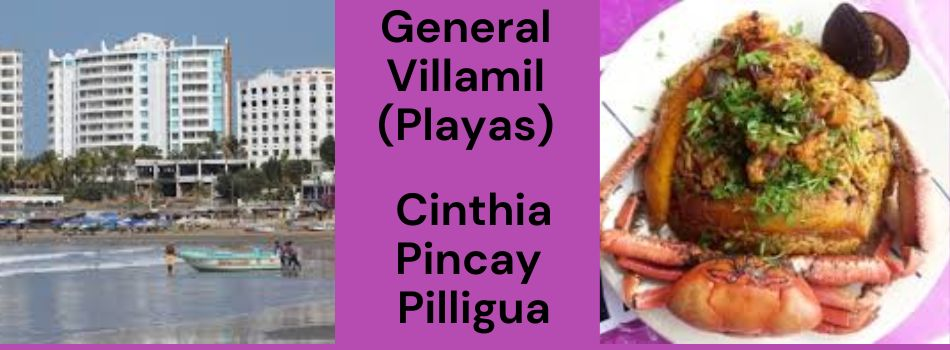
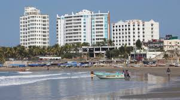
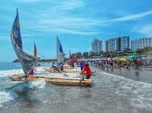
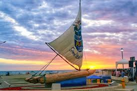

El turismo es una de La ciudad general villamil playas es una de las visitadas ya que Sin lugar a dudas los mejores atractivos lo constituyen sus extensas playas mas visitadas ya que tiene una de las fiestas de su cuidad ,sus hospedajes, su platos tipiocos y su vista bella al mar entre otra cosas Ubicada a 93 km, su temperatura promedio de 24°C y la precipitación promedio anual es de 250 kilometro, El terreno es plano, su cantonización se dio el 15 de agosto de 1989, conocida como el 2do mejor clima del mundo y poseedora de una extensa playa que abarca desde Puerto de Engabao hasta Data de Villamil, entre los que Área Nacional de Recreación con una extensión de 14 km donde se festeja fechas importante.
Si buscas aventura turística y deportes extremos te recomiendo que visites la playa de general villamil "playas", en la cual podrás surfear y disfrutar lo que a ti te gusta y tambien difrutar de la hermosa cuidad de observar a los pescadores cuando se desplazan en sus balsas de tres palos, embarcaciones tradicionales que recuerdan y recrean las antiguas artes de navegación de los pescadores del litoral. las fiestas de general villamil "playas" son en estas fechas: *El Día del Pescador es en el mes de junio , *Cantonización 15 de agosto, *24 de septiembre: patronal en honor a la Virgen de la Merced.
La Balsa patrimonio cultural de la nación, material e intangible, único en el país, por su técnica de fabricación y navegación. Exquisita gastronomía, corvina frita, ceviches, cazuelas, variedad de arroz con mariscos capturados en la zona, del mar a su mesa. Las playas de Bellavista, El Arenal, y Data de Villamil, ideales para el relax, cabalgatas y adquirir artesanías elaboradas de balsa.
   ir a sitio geografico ir a home ir a costrumbre ir a galeria